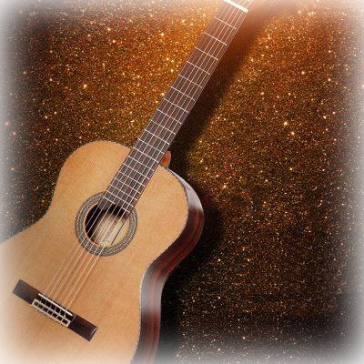

一种具有典型西班牙民族特色的吉他种类，风格较为粗犷。外观看，弗拉门戈吉他比古典吉他更薄一些，制作所用材料与古典吉他大不相同。琴弦的技术高度，面板的松紧要求也完全不同，因为起步晚，真正的弗拉门戈吉他和演奏者在国内很少见到。
弗拉门戈吉他在外观上与古典吉他相似也使用尼龙弦，但背板与侧板用料不同，琴弦与面板之间的距离也不同等等。传统的弗拉门戈吉他是使用柏木做背、侧板，白松做面板 （用柏木做背、侧板可以获得明亮、富有颗粒感的音色） ，小提琴式的摩擦弦钮，琴距也比古典吉他低。
弗拉门戈吉他开始引进玫瑰木和一些其他的木料做背、侧板。玫瑰木做的背、侧板可以发出低沉而浑厚的低音，一般用于大型的音乐会中演奏，而柏木做背、侧板适合一些小型音乐会。
吉他从出现在伴奏歌舞上，演变到拥有无数自由表演曲目及表现深度音乐性的独奏乐器。数十年间众多吉他大师利用吉他清晰的节奏感及能强烈表现自我个性的特色，埋首潜心研究出许多艰难的技巧，产生许多不同效果的方法，至今日弗拉门戈吉他在西方的世界，方能跃升而自成一门弹奏艺术，非同于往昔替舞者、歌手伴奏的角色。
在每位吉他演奏者所弹奏之声调各有所异，然而若真他们内心深处的感情流露，则能强烈表现自我，而在技巧的表现上，更精湛、更具音乐性。聆听能充分表现西班牙民族热情奔放个性的弗拉门戈音乐后，或许在他们敲击吉他琴箱，热情的节奏中，也能激起您对生命的热情。
